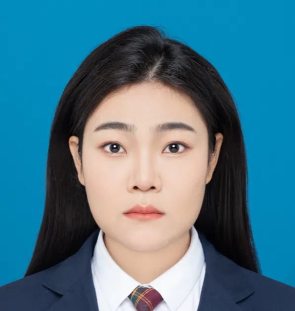

团队
团队成员
课题组汇聚肿瘤免疫、空间组学、单细胞多组学和计算生物学等方向的研究人员。

马若愚
博士后，以乳腺癌为模型，对骨髓微环境进行免疫表型组学的研究。主要包括： 解析人乳腺癌骨转移相关免疫细胞亚群的表型和标记；绘制乳腺癌骨转移微环境中免疫细胞与肿瘤细胞相互作用的动态分子网络；探索免疫细胞、细胞外基质及肿瘤微环境之间相互作用及其在转移发生、发展中的关键作用机制和分子。
ruoyu_maci_ma@outlook.com
奚之砚
博士后，从事基于巨噬细胞的肿瘤免疫策略研究

马子媛
博士后，从事免疫学领域研究，目前专注于乳腺癌肿瘤转移灶免疫微环境中的细胞互作。

郭静璇
2022级博士生; 研究方向：前列腺癌骨转移肿瘤异质性和治疗耐药

李静嘉
2022级博士生; 研究方向：前列腺癌骨转移肿瘤异质性和治疗耐药

廖嘉欣
2023级普博生，脓毒症相关研究。

张倩
2023级博士生，基于质谱分析研究微量细胞的代谢组与脂质组学
顾添奕
2025级博士在读
严筠芷
2023级博士，生物信息学方向

孙成成
2024级博士在读，从事于空间组学相关研究

裴浩宇
2024级博士，主要研究方向为人体衰老与免疫衰老，综合运用单细胞转录组、计算生物学等方法，研究外周血免疫细胞的年龄相关变化及其分子机制。
张英豪
2024级直博，计算生物学

赵一涵
2024级硕士在读

林智宏
2025级硕士，从事空间多组学研究

黄元萍
2025级直博，研究方向为乳腺癌骨转移&巨噬细胞铁代谢
刘星雨
2026级普博生，湿实验方向，同时会做一些空间转录组的样本的处理（CosMx&Xenium）。药大读研期间曾沉迷巨噬细胞吞噬与肿瘤转移的研究，对于分子细胞动物均有浅浅的研究。目前在老师和师姐带领下在衰老领域认真学习中…

颜子钰
2026级硕士 研究方向：空间组学新技术方法开发

陈莹
2026级，硕士，空间组学

王雪
空间组平台科研助理

毛蕊
2026级硕士，研究方向为高通量组学生物信息学；空间转录组、Bulk转录组等数据处理与分析。

范雯俐
2026级博士生，主要从事空间转录组学相关的生物信息学研究，研究方向包括空间转录组数据的生信分析、空间调控网络挖掘以及生物信息学数据库的建设与开发。

赵文静
2026级，博士研究生，研究方向：精准医学大数据。

黎雪蓉
2026级博士生，近年来专注于单细胞和空间多组学技术开发及应用。研究方向：利用单细胞和空间多组学方法研究肿瘤骨微环境差异。